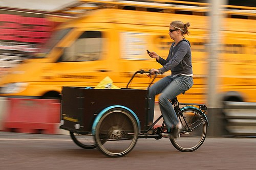

8 Tips Memotret Panning
November 7, 2017Panning adalah memotret dengan menggerakkan kamera searah dengan arah gerakan obyek yang ingin dibidik sehingga obyek akan tampak fokus sementara background tampak kabur. Jangan takut hanya karena ada kata ‘teknik’ diatas, berikut beberapa langkah praktis melakukan panning:
- Makin banyak berlatih, tangan dan mata kita akan semakin terasah!
- Jangan gunakan tripod, untuk mengikuti arah gerakan obyek kamera harus bisa bergerak luwes
- Set kamera pada mode Shutter Priority (S atau Tv)
- Shutter speed yang digunakan untuk panning adalah antara 1/30 sampai dengan 1/8, jadi set kamera diantara angka tersebut
- Cari obyek bergerak yang akan dipanning (tips: pilihlah background yang berwarna-warni untuk panning sehingga hasil blur dari background makin menarik)
- Arahkan kamera mengikuti obyek yang bergerak dan pencet separuh tombol release untuk mengambil fokus.
- Usahakan tangan bergerak selembut mungkin, gerakan kejut yang mendadak bisa mengakibatkan hasil foto yang tidak menarik
- Saat tangan kita sudah ‘seirama’ dengan gerakan obyek, pencet tombol release untuk mengambil eksposur